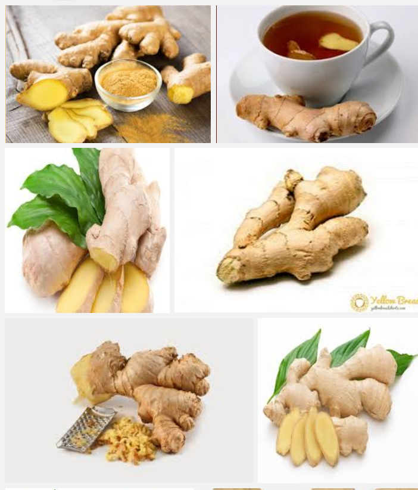
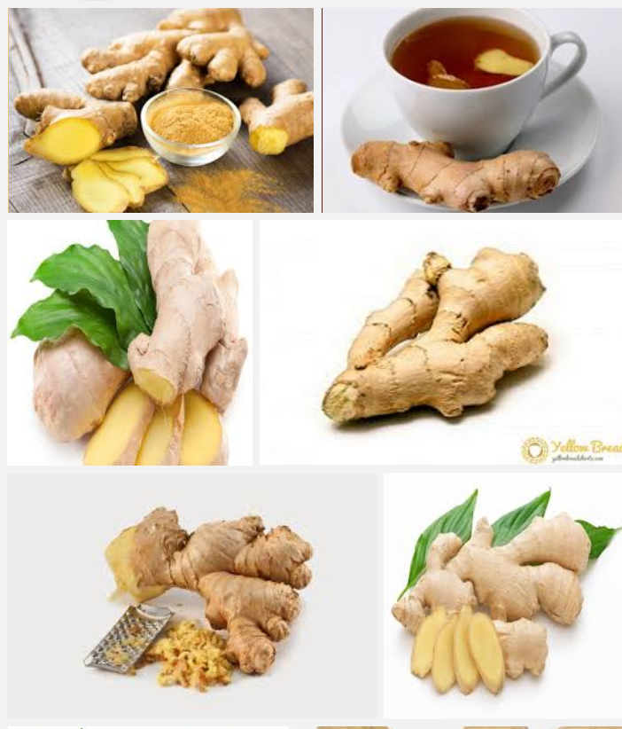

Tangawizi ni kiungo kinachotokana na mizizi ya mmea wa tangawizi, Mmea huu unafnana na binzari ikiwa bado haijamenywa maganda yake. Tanzania hulimwa zaidi katika mikoa ya nyanda za juu kusini na baadhi ya mikoa kama kilimanjaro, Manyara, Morogoro, na kadhalika, Tangawizi ni kijngo ambacho kinaweza kututmika kama dawa katika mwili wa binadamu, Kiungo hiki kinaweza kutumika kikiwa kibichi au kimekaushwa na akutengenezwa kama unga
 

Mtundula ni mti wa asili usio na madhara yoyote mwilini unaotumika kutengenezea chai, Ukiwa na mchanganyiko wa hiriki, mdalasini pamoja na mchaichai, na karafuu,
Pia vile vile mtundula unauwezo wa kutibu maradhi kama yafuatayo
NB:Kwa matumizi ya kilasiku tumia kijiko kimoja kwenye ujazo wa lita moja, Pia tumia kila siku kwa matokeo mazuri,TUMIA MTUNDULA MAJANI YA CHAI ASILIA